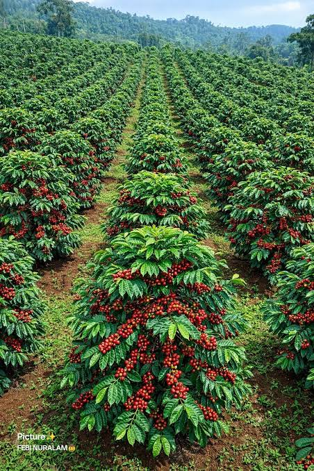
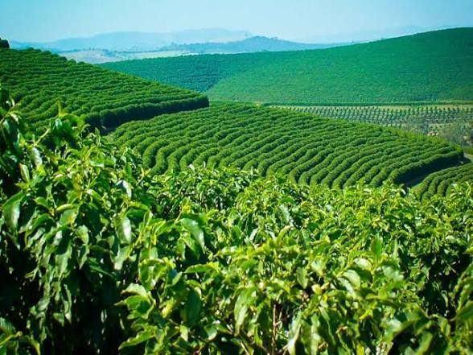

Aroma house was started in 2000 by sir Edward mwangi the Aroma house was built to allow us to enjoy our own products instead of buying from outside nations
Its mission is to make people induldge in farming and get employment also its to make our nation rich in coffee and tea and development
Its vision is to see people coming to gether embrassing farming instead of ignoring it and running to crowd in other employment apportunities

